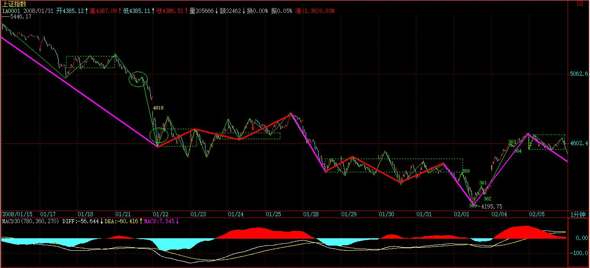
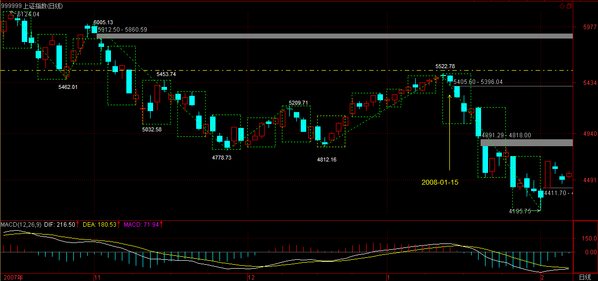
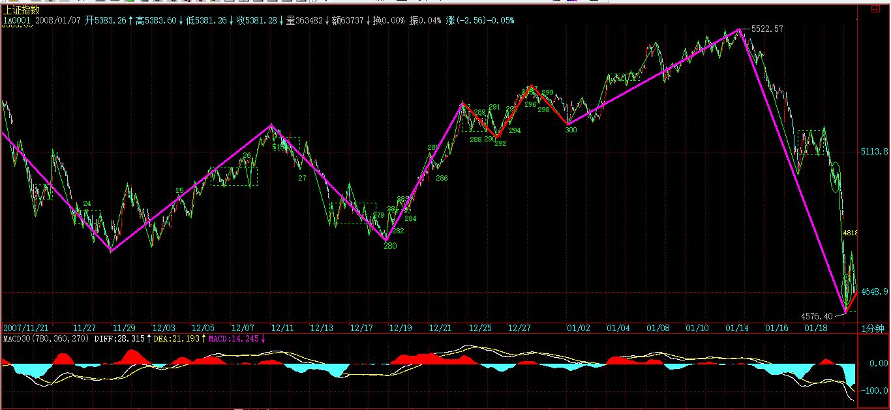

(2008-02-04 19:51:49)
过节前，本不想再写课程，毕竟家里的事也不少，一过节，这总少不了。不过，还是抓紧时间写上两句。
一种思维模式的改变是很难的，因为一种思维模式的存在，往往连自己都不察觉，特别，一出现强烈走势后，那些老的毛病就又出来了。【韶山映山红】不要预测未来，要用严格逻辑关系的分析去做完全分类。】这几天的大盘转折走势，就是一个很好的例子。
一个背驰后，无论是盘整背驰还是真正的背驰，理论只能保证其回拉原来的中枢，这是正确的思维方式，那么，回拉之后如何，这涉及预测。正确的思维是，把回拉后出现的情况进行完全的分类，根据每种分类对应的后果，决定你自己的对策。
例如，上周五下午的背驰是很明显的，任何人都可以当下发现。这个背驰进去后，收盘了，后面面临着继续向中枢上边突进以及再次回探两种情况。
【韶山映山红】这里的背驰是a+A中枢盘整背驰，目标是返回中枢的ZD，收盘时已经很接近这个位置。】
【韶山映山红】离开段有a+A中枢盘整背驰，但是离开段内部没有线段类盘整背驰，最后线段内部也没有线段类盘整背驰，完全是底部小转大的反弹，没有涨破前低，形成了线段类下跌趋势，到361还不能说转折了。362没有新低形成的二买，最终促成了尾盘涨破前低。每一个向下的转折点都有小转大的身影，这个实例的当下的判断其实很难。】
【韶山映山红】最后一个向上的线段属于第二种情况，还没有确认成立，所以“后面面临着继续向中枢上边突进以及再次回探两种情况”。】
第一种情况，【韶山映山红】“继续向中枢上边突进”。】意味着362开始的线段要继续延续下去，而第二种情况，【韶山映山红】“再次回探”。】首先就要破坏362开始的线段。【韶山映山红】362开始的向上线段不成立，或者成立之后被向下线段破坏。】那么，这两种情况就很简单了，就等周一的开盘当下地决定这线段是否被破坏。
注意，这是严格的理论思维，和周一有没有消息，是否有利好毫无关系。特别地，如果有利好，竟然还走出破坏362开始线段的走势，那么这问题就严重了。【韶山映山红】利好却不能走好，说明还有更大的利空被大资金掌握。】
当然，实际上，大盘一直到了364才破坏了这线段。
但这时候，就不存在走的问题了，为什么？因为理论上，这演化成线段类上涨的可能性极大，除非363开始这线段跌破361这个位置。【韶山映山红】362-363对360-361没有盘整背驰，就是线段类上涨，除非363开始小转大而跌破前高361。】所以，后面你只要看这着线段是否跌到那位置，显然也没有，所以就继续持有。
等364这出来，展开新的线段后，因为已经的第二个线段类中枢，所以就要注意是否有可能出现类背驰，【韶山映山红】线段类中枢，线段类趋势背驰。】
这就看明天开盘后的情况，如果不能继续保持类似斜率的上涨，那么这线段类上涨结束形成一个1分钟中枢就要情理之中了。【韶山映山红】线段的“斜率”是力度的表征。】
你看，上面所有的分析，都要严格的逻辑关系之中，这是理论的必要结果，也是一种正确的思维方式。
当然，一个线段的类背驰是否需要抛点货，这是每个人的爱好问题，你的操作级别问题。
这就如同打仗，你不能假设明天某某山头还在自己手里，然后根据这个假设去安排兵力，山头是否在自己手里，那是当下的。当然，你可以去反复争夺一个山头，但你不可以假设这山头在未来的某一个时刻100%就在自己手里。
这也如同中医，你不能认为你的药一定有什么效果，效果是吃了药以后再望闻问切测出来的，而同一病人的药，要根据这不断地望闻问切进行必要的增减。当然，你也可以保持不变，就如同在一个上涨趋势中，你可以保持持有，但一旦出现超越你的级别，你的操作限度的转折信号，也就是背驰，那么你的药就必须要变了，甚至是大大地改变。
因此，如果周一并没有出现今天的利好，你的操作逻辑并不会有任何改变，还是根据当时的图形是否触及你的操作分类界限进行，这才是正确的思维。
换言之，你在操作时，你后续的所有可能面对的情况与对策都必须了然，否则你就没资格操作。
对于一个真正的操作者，没有任何情况是意外的，因为，所有的情况都被完全地分类了，所有相应的对策都事先有了，只是等着市场自己去选择，去触及我们事先给定的开关。
说实在，比起中医、打仗，股票是最简单的，为什么？因为股票的后续走势，因为有了本ID的理论，都可以严格地唯一地给出统一的完全分类，而中医、打仗，要面对的可能就更复杂了，特别打仗，完全的分类，可能只能是一种假设了。
如果你的思维还是转不过来，那么就没有必要再去学习，首先把思维转过来。
有人可能问，如果出现回探的情况，那么可能在背驰买的出不掉。显然，这种情况是很可能的，因为T+1，该反应的时间你可能没资格卖。
不过，一个很简单的对策就是，你必须买比大盘要强势的股票，也就是先于大盘的股票，【韶山映山红】所谓“比大盘要强势的股票”，走势先于大盘，转折晚于大盘。★】这样，一旦大盘回转，这类的股票走势都会比大盘强，这样自然有足够的空间让你选择。【韶山映山红】走势都会比大盘强。】
注意，最好的选择是比大盘稍微先一点的，而不是完全逆于大盘的，因为后者，往往有可能补跌，或者逆着大盘洗盘，例如，今天的600737就是一个很好的例子。【韶山映山红】600737新疆屯河，2007.03.07中粮屯河，2017.02.17中粮糖业。】
当然，新股也是一个很好的选择，不过这需要这类股票开得不太高，而且有明显的新资金介入，在一个有一定级别的向上过程中，这一般都有比较稳定的表现。【韶山映山红】以后整理。★】
还有就是先于大盘调整的，例如这次那聪明的驴，就是这种类型。【韶山映山红】以后整理。★】
【韶山映山红】601600中国铝业。】
当然，如何选择股票，这是一个经验问题，必须要反复练习才会有灵感与感应的。其实，股票真没有那么复杂，如果你有了感应后，打开一个股票的图，你一眼就能看出这面首是否在搔首弄姿在等着宠幸，这就如同419时，你选择人难道还需要技术分析吗？那不就是一眼的事情吗？哪天，你看股票就如同419选人一样有感觉，那你就有点靠谱了。
(2008-02-05 15:09:59)
本ID前面说了，节前连涨三天是不允许的，而两天要看周末消息和石油的变态程度。昨天，有利好涨了，而今天的石油，有人疯狂地抛出来，似乎那石油是不用钱买的，这么变态，你说能红盘吗？
一根筋，不是别有用心就是脑子有水，市场操作，不脱离一根筋，那命运是怎么样，是不用讨论的。
技术上的问题，昨天说得很清楚了，就是线段类背驰后必然出现1分钟中枢，【韶山映山红】线段类背驰后必回前高，这就形成了1分钟中枢，然后才是怎样合理的划分中枢结构。】节后，就看这中枢的演化，事情就这么简单，不需要任何一根筋的想法。
而中短线上，还是4500点上下那中枢的震荡走势。【韶山映山红】这里说“还是4500点上下那中枢的震荡走势”，此时依然没提“4400点那中枢的震荡逐步向5分钟扩展去”的下文。】

请好好看看真正的大资金是如何运作的，大概很多人都忘了580989了吧，看看今天的走势，有什么想法？一个长假期，一个稳健的大资金，当然要这样进行有效的对冲，很多时候，不确定因素是要靠对冲来解决的。这样，不管外围在春节发生什么事情，都可以吃嘛嘛香了。
当然，对于小资金来说，580989这类东西风险太大，没必要参与，而且小资金不一定要对冲了，就要发挥自己机动灵活的特点，看不确定，就先走一部分，有钱在手里，什么都不怕了。
贪婪总是希望行情按自己的欲望发展，那是鸭屁思维，不改变，永无出期。
总结一句，任何不确定时，唯一正确的做法就是控制仓位，你能自如地控制仓位，那你的水平就能上一台阶。
控制仓位，并不是说一定要空仓，而是把仓位控制在一旦发生特殊情况能有足够反应的水平。
任何想把最后一分钱赚到的，最终的命运只能是倾家荡产。
大过节的，就不说这些事情了。但市场的残酷，是不分节日的，那种春节一定要红盘，奥运一定要大行情的思维，要好好醒醒了。
大过节的，抛弃股票，享受人生。你的身体、家庭、父母、亲人，比股票重要一亿万倍，好好珍惜吧。
先下，再见。
(2008-02-05 15:35:31)
恭贺新禧
缠中说禅
花炮声声喜辞旧
桃符户户始更新
斗回禹域千秋岁
日丽尧天万里春
(2008-02-13 15:15:42)
开门大红包，本ID可给足了，580989的两次启动，都给足提示，第一次，提示后在0.42下随便买到，这次，即使节前你自己没看明白，今天在0.5下随便买，而且还两次机会，操作好了，随便一天50%的利润。
所以，本ID绝对不欠任何人红包了。
至于大盘没有红，本ID可真没什么兴趣关心，具体的说法，在节前最后的帖子里已经无比清楚了。
580989的中线中枢，本ID在第一次启动时已经明确说过，就是0.6上下，回头再看看，这走势是不是完全的教科书？请好好再看看本ID节前最后的帖子，看看关于如何对冲，如何平衡风险的做法。让那些预测连涨3天的吃西北风去吧，两次580989的礼包，足够连续30涨停的利润了。
强烈注意，本ID再次必须声明，一般人绝对不能买580989，你想，600737在8元说的还有人是亏钱出来的，580989就是你的坟墓，没那本事心态，就继续当教科书演示看看吧。【韶山映山红】600737新疆屯河，2007.03.07中粮屯河，2017.02.17中粮糖业。】
还是说说这无聊的大盘吧。
只有一根筋的才喜欢开门红，知道1993年开门红
以后就从368点的深圳综指跌到94点，大概也只用了1年半不到时间。【韶山映山红】深圳综指399106。】
不开门红，其实真没有什么，至少证明，里面有足够多的资金都没觉得今年是必须在春节一开门就要骗人来埋单的，至少有足够多的资金还有下一步的打算。【韶山映山红】这个逻辑，以后研究。★★】
技术上，本ID已经说得超明确，就是原来最后那中枢的扩展，这震荡什么时候结束的唯一标准，就是出现第三类买卖点，其他一切都是废话。【韶山映山红】“原来最后那中枢的扩展”，应该说的是下面那个中枢。】
个股方面，中石油站不稳，指数要站稳那绝对是没戏的，那10亿的玩意，这两天成交了4亿了，当然，里面还有很多水分，但中石油今天留下的缺口，应该很快就回补，问题还是这24元上下的中枢，最终如何突破，这和大盘中枢的突破是密切相关的。
说实在，今天这样的成交量，说明了这春节假期确实太短了，怎么都该放到15吧，
各位在春晚是否看到那讽刺股民的节目了？【韶山映山红】2008年央视春晚的相声《疯狂股民》(武宾、李伟健)。】有这样的现象，你说，这股市能好吗？
中线，就看3月的会能不能搞点什么了，【韶山映山红】2008年3月全国两会。】面包会有的，但要靠自己去抢。
先下，再见。
(2008-02-13 16:40:11)
世界和谐，那么我们就粗暴吧，否则世界就太不和谐了。本ID觉得以前在博客里的语言都太过温柔，太过和谐，而这样的语言，是世界不了世界的。所以，以后，该粗暴的时候还是要粗暴，语言本来就是人类对世界的暴力。
现在，博客里的人太多了，好象快2000万的点击，希望一些粗暴的语言能让人少点。
本ID的爱好太多，在中文方面，本ID最大的希望是把古典的诗歌传统拓展到所有现代的任何领域，还有一个，就是希望证明，五四以来的白话诗之所以最终走入死胡同，不是白话本身的问题，而是写诗的人都是草间虫鸣之辈，白话文确实是一个最烂的文字系统，但思想的表达，是可以超越这一切的。
春节时，闲着无聊把一些最重要的白话诗人的全集或选集都浏览了一遍，当然，里面还是有可以的东西的，就像最差的面首一生还能自发地有几次象样的高潮，但所有这些人最大的毛病，就是没有自己的声音，他们的声音，都不过是被西方或他们其他爸爸搞烂玩意的复制。
这本不是特想玩的游戏，但既然有了玩的想法，就玩吧，莎士比亚给英文留下了N多的十四行，那就本ID也莎士比亚一把，也给白话文留点十四行，希望N年时间能完成。
为什么是十四行，这好歹是格律体，本ID鄙视所有只会写非格律体的垃圾，如此而已。
爱之十四行
缠中说禅
吾爱，弃我荒凉于繁华。
丢了太阳的天空，喷血流霞。
所有的风，都只在风中燃烧。
星河擦亮星河，黄沙点燃黄沙。
星光如坟，种满岁月的山脉。
大地的掌纹，夏日最后的黄飘带，
你是所有日子中最静穆的村庄，
无比绚烂，恰似我万世的尸骸。
石头花海，淹没丰美的陵园。
九万里悲欣苦痛，九万里戈壁冰川，
吾爱，弃我繁华于荒凉，
丢了天空的太阳，灵魂鲜活肉体无边。
时间丢了，所有的光囚入无空间的空间摩荡，
哺乳着所有的世界、所有的生存和死亡。
自由十四行
缠中说禅
我的无弦琴决不歌唱你，自由。
一花世界，谁在花败之后畅游？
你，思想的热毒、语言的痰核，
被命运三女神始乱终弃的面首。
自由的风永远走不出自由的风。
你本自由，自由缚你自由中。
能自由的永远是被自由的奴隶，
看六十亿的太阳交映万古长空。
没有自、何来由，自由从来只由自。
一切你的道路只通向决不永恒的尸体。
十二月的雪夜，叫春的猫儿自由绽放，
每一声的绽放都在编织最后的坟衣。
蚂蚁战场上，千万山峰疯狂生长。
走不出大地的大地，月色清凉。
愤怒十四行
缠中说禅
九万年闪电凝光剑削平九万座山峰，
激扬四大洋狂澜惊涛舂打四季星空。
鞭落千亿银河的星球千亿亿次砸下，
摧毁每一片金黄，摧毁每一片青葱。
宙斯，我的永不成器的痴儿：
让奥林匹亚的雷霆撒播死之诱饵，
生命的吞咬带来澎湃高潮的死亡，
每一个星球爬满宝气珠光的灵輀。
耶和华，我的永远不举的老面首：
让你的世界每朵鲜花都成噬人魔口，
每个苹果都有绿眼长蛇吐紫色谗涎，
每一寸阳光都化裂脑开山的斧头。
日月，洪水上去漂；银河，天火里去焦。
时空破裂，宇宙的残片，无尽怒飙中去消。
好了，今天到此，不能再写了，诗不能一次多写，多写有损阳寿，看看，诗人多短命，这不是开玩笑的。
(2008-02-14 15:25:29)
先请个假，今天晚上有事，晚上的帖子，本ID就克扣了，抱歉。
今天的580989，一个经典的走势，不管你是否参加，你都先请搞明白：今天尾盘的拉起故意和昨天是一样的，这就是一种典型的骗人手法，因为一根筋的人最多了，以为什么都是可以克隆，以为有一样的开始就有一样的结果，结果就给克死了。
世界就这么残酷，这一招，用了好几百年了，在中国市场上也用了好十几年了，还继续好用，人就这德行了。不管你参与与否，被骗与否，都要学着点吧，这样以后兴许不会再被骗。
当然，类似骗局有很多变招，因为前N-1次都是一样的，但这N可以不断地变化，用得最气势磅礴的，就是10几年前深圳194点到334点那次大反弹，
不断同样的模式后，最后一天大跳水，多少人一直套到100点，可怜呀。
说大盘吧，大盘后三天是技术关键，因为所谓的MACD等指标金叉就要出现，要骗你，也就是这个时候。【韶山映山红】金叉死叉等位置是骗线集中地。★】但这时候有两种骗的方向，一种是骗空头，一种是骗多头，都仔细看好了。

大的方向，本ID说过N次了，但糊涂的人太多，再明确说一次：
一、下面最大的机会，就是6124点下来30分钟走势类型结束后的向上30分钟走势类型，这机会在酝酿中，也就是在中阴阶段。【韶山映山红】1，6124点下来是“30分钟走势类型”，没说是趋势，应该就是30分钟盘整。2，机会就是“30分钟走势类型结束后的向上30分钟走势类型”。3，“机会在酝酿中”，“在中阴阶段”，也就是说，“向上30分钟走势类型”还刚开始。】
但那30分钟的向上类型，最坏的情况，就是一个盘整，并不一定走出上涨类型，这是必须明确的。【韶山映山红】必然有“30分钟的向上类型”，前面的分析还要更好的做一遍。以后研究。★★】
如果是盘整，就在这上下搞出一个日的中枢，【韶山映山红】如果是趋势，就没有日线中枢？以后研究。★★】然后就面临6124下来的日走势类型的第一个中枢，【韶山映山红】此时还没有日线中枢。】后面无论延伸出下跌或盘整，都是完全可能的，如果是下跌，那当然恐怖无比，比这几个月都要恐怖。
所以，3月前后，对中线走势极为关键，要继续全面富裕还是怎么着，就看着办了。
二、个股依然机会不断，新股、高送配的，有各类题材的，都会有机会。当然，从上线角度，本ID看好的类型也说过无数次了，就是环保（包括新能源）、农业、消费类消耗品等等，短线，当然就是高送配中股价特别低的，例如现在不到20，而要送10之类。中线，化工等玩意是值得注意的。
注意，看本ID的文章，你必须连着看，因为有些前面的结论，本ID不可能每次都重复，例如对大盘的总判断。
还有，本ID在前面那波中把人分为两类，一类就是坐小板凳的，一类是可以不断参与活动的，你首先要分清楚自己是哪一类。
就象从4778到5522那次，本ID从来没让坐小板凳的起来，为什么？因为那次是30分钟以下级别的活动，【韶山映山红】5分钟盘整向上走势。】既然我们假设小板凳至少要搞30分钟以上的，否则搞不过来，那么当然就一直不用起来。
但还是有无数孔男人的学生叫嚷，为什么涨了不让我们从小板凳起来，那你首先问自己，你有搞30分钟以下级别的本事吗？5522点的急促下跌，就是因为上来的级别小，下来的当然也就小，你能反应过来吗？那些下来时不会动的，你认清自己的水平了吗？

认清自己，否则一切瞎掰。就像580989，机会就这么大，但你首先要有这水平，自己都认清不了，那只能等着被屠杀。
认清自己，然后根据实际走势决定自己的操作，就这么简单，还孔男人什么呢？
先下，再见。
(2008-02-15 15:39:01)
今天回试年线暂显支持，但问题还是下周初，因为MACD的柱子是否有效放红，这是下周最关键的问题。
目前的情况十分明确，就是技术面完全支持行情的展开，但基本面、政策面有太多令人不满意的因素，因此才有如此上下为难的局面。
整个政策面的明朗，大概还是要等到三月会后，因此，之前，一个震荡的局面依然。其间，上下尝试，左冲右突一下是很正常的。期间甚至不排除再有一次大的跳水去把最后的盘子洗干净，当然，这涉及最后的底部图形，如果是头肩底，那这次跳水就免不了，如果不是，那就不一定有了。是否头肩底，和后续的消息面相关，技术上反而没有太大的倾向。
【韶山映山红】冲高之后的下跌，两个1分钟中枢可以扩张升级的。该怎么划分，缠师没有提及。那么，就是一下一上的两个盘整？以后研究。★★】
但个股行情会继续展开，只要指数稳定筑底中，有题材的个股就不会寂寞。但操作中必须要有严密的布局，例如，昨天说的20以下送10的个股，其实就没几只，本ID没明确说出来，就是不希望养成懒惰的习惯，连自己功课都不想做，那干脆把账号告诉本ID，本ID把钱直接打给你算了。
最符合要求的，只要做点功课，显然不难找到，就是600795。【韶山映山红】600795国电电力。】这股票，业绩很好，10送10后就今早算9元，风险度很低。而且，530后大唐电力的送股行情表现，使得这股票的后续走势更有想象力。但这些都是估算，你介入时，就应该知道，这两天的小阴线是在构造一个小的第三类买点，18元上介入，大概的风险有10-15%，所以，你就根据自己的风险能力去决定自己的仓位，然后买入相应仓位，并留下一定的对冲资金去为后面减低成本，有了这一些安排，今天一大早有足够的时间让你去介入了。

注意，这里教的是一种思维操作方法，不是说一定让你去买600795，而且，现在拉起来了，再买就没意思了。
来这里，不是培养懒人的，这点，请一定注意。
580989，今早又给了一次走的机会，没走就不要怪本ID了，当然，大盘只要走不好，这东西还要折腾，但至少这一走，逃过20%的跌幅，这已经足够了。
周末，都好好休息吧，身体最重要。
先下，再见。
(2008-02-16 10:39:47)
先说两句闲话：
一、以后周末只一帖子，本ID也要有点时间干别的事情，不能老写帖子。
二、看到很多人说保定天鹅，那当然也会有行情的，只是最好的买入点早过了，去买，就是等于追高。【韶山映山红】000418保定天鹅，2008.03.14除权除息，10送10股，股本从3.2亿股变更为6.4亿股。2013.6.14更名恒天天鹅，2015.10.23更名华讯方舟。】
注意，对高送配的，一定要小心其中利用题材出货的，因此那些过分炒作的一定要小心，另外，能提前知道消息介入那是最好的，如果没这渠道，消息公布后，上冲第一次回调确认时，只要没有出货现象，价位不高的，都是安全的。
“你”、“你的” ，因命名而得名，当然，不同的语言系统，这两个玩意有不同的形态，但实质上是一样的。
显然，这个得名与命名，并不是完全的凭空而来，因为，如果没有生起这“你”、“你的”之相，也没有这样的名。
唯物主义与唯心主义，老爱争论究竟是名决定相，还是相决定名，是物质决定意识，还是意识决定物质之类的无聊玩意，其实，名和相、物质与意识，都不过是妄想而已。
妄想的力量当然是强大的，有了最原始的名相，就可以编织出最庞大的妄想之世界。例如，科学，也是一种妄想，而在妄想的世界里，是可以自我证明的。例如，符合科学之名的相，是可以不断重复出现的，为什么？因为相也在妄想之中。这名和相，不过都是共业的游戏。
就算最终，有一种如此强大的命名系统，相应地可以完全对应所有人类可以面对的相，也就是可以解释、可以科学所有人类所能见到的现象，按照人类的欲望制造出一切新的玩意，这也还是在妄想之中。
站在打坐的角度，第一重的妄想，就是名的妄想。名之缠，当然在后现代哲学以及其他所谓的智者那里也有所觉察，他们希望破名之缠，以为这样就得到一个本真的天地，却不知道破名之缠恰恰被名所缠，名、概念系统这类玩意，就是妄想，用一个妄想去破一个妄想，如砍头觅头，愚痴矣。
而名的妄想下，第二重相的妄想，就更不是常人所能明了。你六识所对，都在妄想之中，而你的六识，更在妄想中。可笑一些痴人，玩什么当下直观，却不知道，这不过依然在最粗糙的相之妄想中。
你的一切，你的世界，宇宙时空，天堂地狱、等等一切，都在相之妄想中。这妄想，相续相缠，演绎出所有的世界、所有的生存与死亡。
打坐，本质上也是一个大妄想。希望以打坐去破妄想，那更是一个大妄想。这里，你无路可走，无门可入。
无路可走，无门可入，方有少分相似。究竟如何？参！
(2008-02-18 15:18:26)
上周说了，本周最重要的事情就是这MACD的红绿柱子问题，今天，借点利好，终于把这红柱子给弄出来了，但注意，这并不意味着一切无忧，下面就是一个确认的问题。
技术上，一般这种红柱子出来后，如果不能站住今天的位置，那么就会出现出几根红柱子再出绿柱子的情况，这种情况往往对应着新一轮的杀跌，所以这红柱子出来，需要预防的就是这种情况。【韶山映山红】大幅度下跌，把黄白线拉下0轴，然后盘整带来黄白线转折，因为是盘整而不是转折，下跌中继的可能性就大。】
具体操作上很容易处理，也就是红柱子出来后，如果后续能量不能跟上，那么出现以上情况的可能就很大了，那么在冲高无力时，一定要先出来看看，因为后面对应的转折很可能是极为急促的。【韶山映山红】为什么后面对应的转折很可能是极为急促的？★可以做个专题，以后研究。】
技术上，底部的构造有头肩底的可能，这红柱后很快再绿柱的情况，往往就对应这种情况，在最好的情况下，也就对应双底的情况。【韶山映山红】双底比头肩底好。★可以做个专题，以后研究。】
当然，以上都是些不精确的分析，如果按本ID的理论来，这些分析都没多大意义。现在就是一个中枢震荡的过程，这点说了多次了，
今天并没构成线段类上涨，说明向上动力不足，【韶山映山红】只有一个线段类中枢。】因为今天构成的4575上下的1分钟中枢就有着重要的技术意义。【韶山映山红】“因为”笔误，“因此”。4575是1分钟的回踩中枢的起点和ZG点。】后面的超短线走势完全由此中枢最终演变所决定。
个股方面，农业、化工、奥运等等都有表现，但板块持续性还是有问题，现在的问题是，一个超级裸奔的板块还没有形成，所以个股行情只能显现零散的局面。要改变这局面，还需要人气的不断培养。600795碰到20的整数关口，需要整理换手，如果高送股的板块都走不出来，其他板块就更难有戏了。
本周能否保持住MACD的红柱，
并站稳4575之上，【韶山映山红】4575是1分钟的回踩中枢的起点和ZG点。】这是对多头最重要的技术要求，明天的CPI是一个考验，能否经受这考验，这是能否完成要求的关键。
先下，再见。
本课目录
教你炒股票98：中医、兵法、诗歌、操作2阴线迎春给一根筋上了生动一课七绝一首恭贺新禧并告博客停业7天开门不红又何妨？十四行画廊1：爱、自由、愤怒。后三日是技术上最关键时刻回试年线暂显支持教你打坐24：“你”、“你的”名、相、妄想MACD红柱子终现待确认